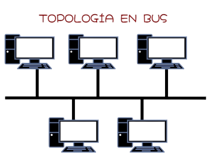
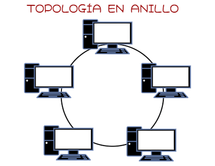
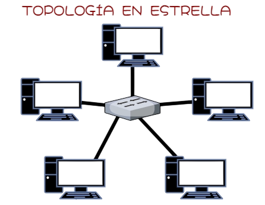

Topología en Bus
Topología en Anillo
Topología en Estrella
Topología en Estrella Extendida

Las topologías de red son la disposición física y lógica de los dispositivos y conexiones en una red informática. Las físicas se refieren a la disposición real de los cables y equipos, mientras que las lógicas describen cómo fluyen los datos a través de la red.
Aunque no seamos conscientes de ello, todos utilizamos redes informáticas en la casa o en el trabajo ya que estas interconectan celulares, computadores e impresoras. Para que todos estos dispositivos funcionen de la manera más eficiente es necesario planificar la topología de una red. La topología de red es un concepto que hace referencia a la forma en la que está dispuesta una red, incluyendo sus nodos –puntos de intersección, conexión o enlace de varios elementos– y las líneas utilizadas para asegurar la transmisión y recepción de datos de manera correcta y segura. Dependiendo de este arreglo, se pueden evitar cortes innecesarios o incrementar el flujo de la información transmitida.
Dentro las topologías de red tenemos:
Elementos de una red
Una red de computadoras, red de ordenadores o red informática es un conjunto de equipos nodos y software conectados entre sí por medio de dispositivos físicos que envían y reciben impulsos eléctricos, ondas electromagnéticas o cualquier otro medio para el transporte de datos, con la finalidad de compartir información, recursos y ofrecer servicios.